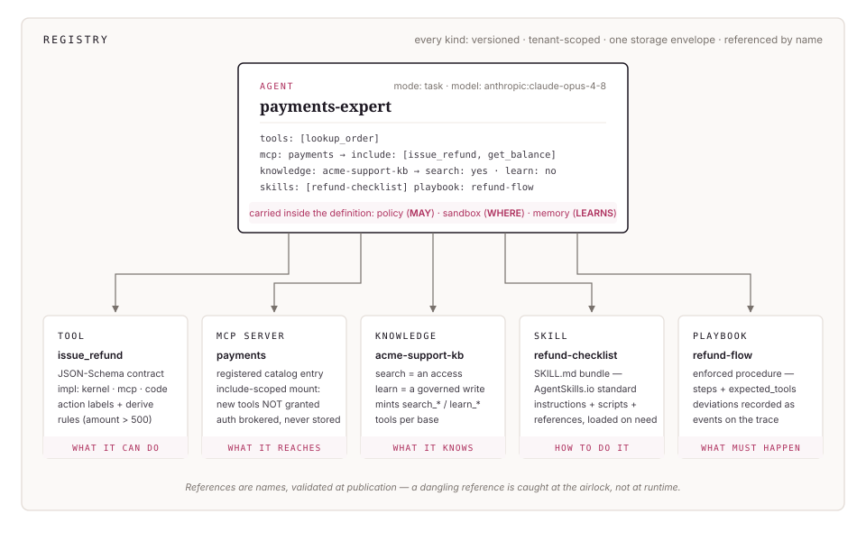

The platform · Tulip
The authorization control plane for agentic execution.
Define agents, policies, and connections once; execute anywhere. Every consequential action is weighed locally — in your environment — against centrally-authored policy before it runs, and what crosses back to the control plane is a verdict, not your data.
This page describes the target architecture. Status labels mark what runs today in our dev cluster and what is in progress.
Two planes with a trust boundary between them. You rent the control plane; you own the data plane where your models, secrets, and execution live. Select any component to see what it owns, what it deliberately does not, and how that's proven.
Control plane Tulip-hosted · you rent
Data plane Your account · you own
The gate, in-process
tulip-agents — a thin, Apache-2.0 library. The admission gate and the hash-chained record inside your own process, no infrastructure required.
Shipped
One installed process
The policy engine, the secrets broker, and the sandboxes — one process running in your environment. It holds your credentials; the control plane never does.
Running in dev
Studio & Registry
Author policy, certify and publish agent versions, review holds, export audit. Installs nothing in your environment and executes nothing — designed so payloads never leave your plane.
Hosted beta in progress Sep 30 target
An agent is one versioned definition: the model, the tools it may call, the systems it may reach, what it knows, how it works, and what must happen.

Capability is the product; the control is what lets a company actually use it. The lifecycle makes both operational.
01Author
Agents, playbooks, skills, and tools as governed, versioned definitions in the Registry — drafted by hand or in conversation, with the policy part of the definition from the first draft.
02Certify
A draft earns authority by evidence: certification runs exercise it at escalating levels of trust, and the resulting evidence is signed and tied to the exact version it describes. Running in our dev cluster today.
03Publish
Certification produces an immutable version. An uncertified version cannot deploy — the gate sits at the deployment boundary, not in a review meeting.
04Run
Execution happens in your data plane, next to your models, data, and secrets. The runtime pulls versions and policy down; it pushes traces and evidence up. Your credentials never reach Tulip.
05Approve
Actions the policy holds wait for a named person — durable holds that survive restarts, with expiry, escalation, and mandatory justification recorded alongside the decision.
06Audit
Every decision lands on a hash-chained, signed trail. Export re-verifies outside the registry, from the exported bytes and a public key alone — evidence, not a screenshot of a dashboard.
![The certification airlock: a draft — authored by hand or by the authoring agent — is exercised by certification runs at five escalating levels of trust (recorded fixtures, mock services, your staging, live test endpoints, supervised canary) with adversarial prompts, boundary probes, and contract tests. The signed evidence, pinned to the exact artifact, goes to a named approver whose authority is enforced and whose justification is recorded. What crosses the airlock into production is a published, immutable version — the certificate itself.](assets/diagrams/wp-certification.svg)
The $2,000 refund
The whole architecture, in one action.
Your support agent decides to issue a $2,000 refund. Your rules hold anything over $500 — so the run parks, its workspace preserved exactly as it was. The hold lands in the Studio queue with everything a person needs to decide: the action, the arguments, the policy line that held it, and the evidence behind the claim that prompted it. Someone with the authority to approve does so, with a written justification. Only then does the runtime inject the payment credential — the model never saw it — and execute. The decision, the approval, and the outcome join a record that fails verification if anyone edits it later.
An $80 refund clears the same check in-line, with the same record written. You choose where the friction is, and there is none where you haven't asked for it.
![One governed run as a sequence diagram: the client posts a run; the runtime resolves the immutable version from the registry and receives the bundle of tools, skills, playbook, policy, and sandbox manifest; the model call is brokered — the credential is never stored client-side; the model proposes a tool action; admit() weighs it. If allowed, model-directed work is dispatched to the sandbox with data and scoped capabilities but no secrets, and results come back. If held, the run pauses, the hold carries the action, arguments, policy line, and evidence, a person approves with a written justification, and the run resumes in the same workspace. Every decision is written to the hash-chained audit trail as it happens.](assets/diagrams/wp-run-sequence.svg)
The platform is one pipeline — author → certify → publish → run → approve → audit — seen from six seats. Every story below runs on the same architecture.
The developer with an agent that already exists
She runs agents in LangChain today. pip install tulip-agents, wrap the agent, write a short policy: now every consequential action is weighed, the risky ones hold, and a hash-chained record accumulates — no rebuild, no lock-in. When her team wants shared agents and approvals, what she built locally moves onto the platform unchanged, because the open-source runtime and the platform are the same harness.
The operations lead who doesn't write code
He describes the job in conversation: "when a delivery fails twice, open a carrier claim, notify the customer, and credit shipping." The authoring agent drafts the agent, the playbook, and a starting policy; he tightens the thresholds, runs certification against staging, and sends it to his security counterpart to publish. He never left the conversation-and-forms surface; the result is a versioned, certified, governed agent — not a script someone will find in a wiki.
described in conversation → certified → publishedThe security engineer who owns the policy
She doesn't build agents; she decides what any agent may do. She maintains the policy bundles — thresholds, environments, denied actions, which actions demand a person — and the grants that say who may approve what. Approver authority is enforced by the platform, holds expire instead of dangling, and every decision requires a written justification that lands in the chain. What she reviews is evidence from certification runs, not a demo.
editor ≠ approver — enforced, not promisedThe approver on the queue
A held action arrives with everything needed to decide: the agent, the version, the action, its arguments, the policy line that held it, and the evidence behind the claim that prompted it. He approves the $1,400 refund with a justification; the run resumes exactly where it parked — same workspace, same state. He rejects the bulk-email; the run records why. His decisions are the audit trail's spine, and he can defend any of them a year later.
decide with everything attached → the run resumes where it parkedThe compliance officer at audit time
She exports the record — every action, every decision, who approved what and why, chained so that any edit breaks verification — straight into the SIEM. The certification evidence for each deployed version is attached to the version itself. Agent activity stopped being the scary exception in the compliance story and became its best-documented part.
"what did this agent do in Q3, and who authorized it" is a query, not a projectThe platform architect who owns the infrastructure
He runs the data plane — the runtime and the sandboxes — in the company's own account: their VPC, their models, their secret store. Tulip's control plane never sees a credential or a customer record; trace payloads with sensitive content can stay on his side. Sandbox compute runs in per-tenant pools on infrastructure he already operates, behind a provider-neutral contract.
your VPC · your models · your secret store — routing is configurationControl does not live in the prompt. It lives at three places in the runtime the model cannot reach.
Before it runs
Every consequential action is checked against your rules — plain code, not a model — before it executes: allowed, held for a named person, or denied. When a Clusiana model assists, its opinion can make a decision more cautious, never less. Runtime combiner in development
Nothing worth stealing
Everything the model directs runs in a sandbox that holds no credentials, with its identity fixed at creation and its network reach declared up front. Two of the four declared network profiles — offline and allowlisted — are enforced by the operating system today; the rest are in progress.
Fails verification if edited
Every decision is written to a chained record: edit any entry, and the record fails verification. Certification evidence is signed. Either way, tampering shows.
Each claim is proven by a test that runs against the real system, not a mock. The fourteenth is struck, not carried: a claim we cannot prove comes off the list.
Certification pipeline
Live in devAn uncertified version cannot ship. Signed evidence, a certification runner, and a review flow in the Studio — queue, evidence, approve, reject, revoke.
Per-tenant sandbox pools
Live in devA sandbox's identity is assigned by the runtime when it is created — never claimed by the code running inside it.
Tenant isolation
Live in devOne customer's definitions and records are invisible to another's, enforced at the database itself — and verified by a test against the running system, which is how the one policy that only looked enforced was caught and fixed.
Hosted Studio & API
In progressThe hosted control plane at studio.tulipagents.ai — targeted for the Sep 30 beta.
Customer-account data plane
In developmentThe terraform-applied package that runs the data plane in your cloud account under the hosted control plane — with a zero-secret-egress proof as its exit criterion.
SSO/SCIM · Bedrock · consumer CLI
In developmentEnterprise sign-on, the Bedrock model adapter, and the local-first CLI round out the beta scope.
01Never holds your secrets
Model credentials, data, and business API keys live in your data plane. The runtime brokers them locally; the hosted control plane is designed never to receive them.
02Never makes model calls
Models run in your environment, called by your runtime. The control plane authors policy and receives verdicts — it executes nothing.
03Never runs your agents
The flagship shape is a customer-owned data plane: your cloud account, your models, your execution. Tulip hosts the definitions and the policy, not the work.
04Never watches words as a proxy for safety
Gateways and guardrails inspect text going into and out of a model. Tulip governs the action itself — whether the refund issues, whether the host restarts — and records what happened.
The hosted beta is in progress. If you want your agents governed before they ship — or you have a security review that keeps saying no — we'd like to hear about it.